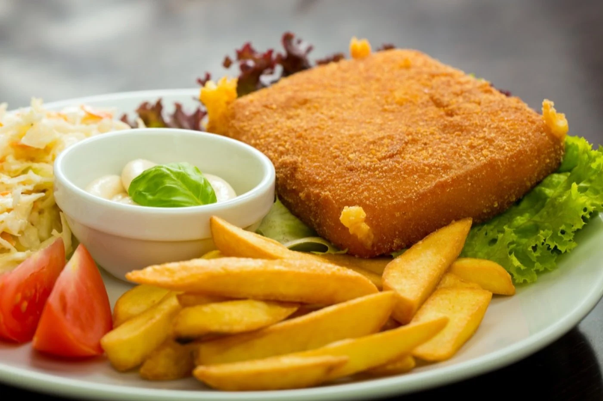

Klasika české kuchyně – křupavý obal, roztékající se sýr a porce nostalgie.
Sýr nakrájíme na plátky silné asi 1 cm. Vejce rozšleháme se špetkou soli.
Plátky sýra namočíme do studené vody – mouka pak lépe přilne.
Obalíme postupně v mouce, vejcích a strouhance. Aby sýr nevytekl, zopakujeme obalení ve vejci a strouhance ještě jednou.
Smažíme na rozpáleném oleji dozlatova z obou stran. Podáváme ihned.
Nejlépe chutná s hranolky, vařenými brambory nebo tatarskou omáčkou.